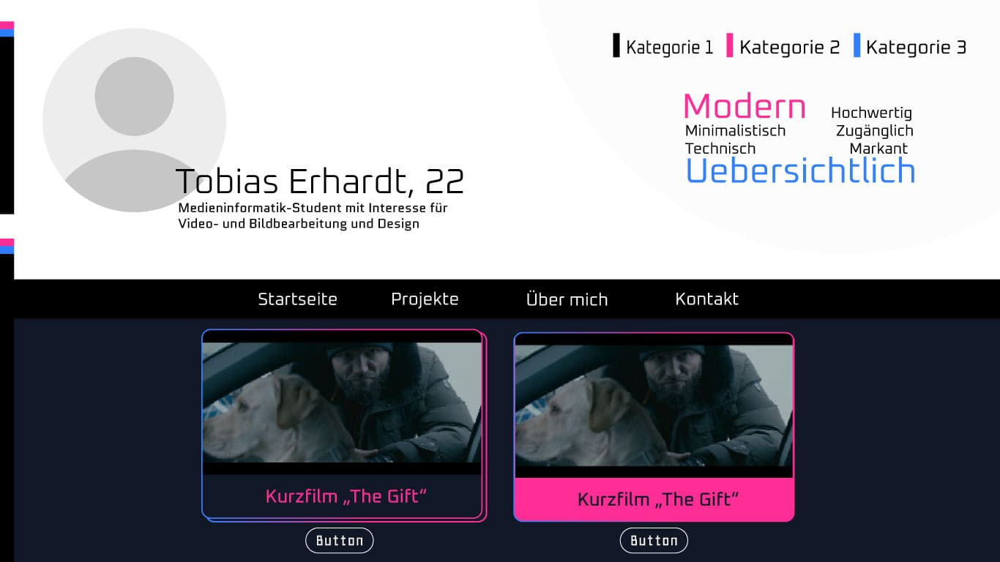
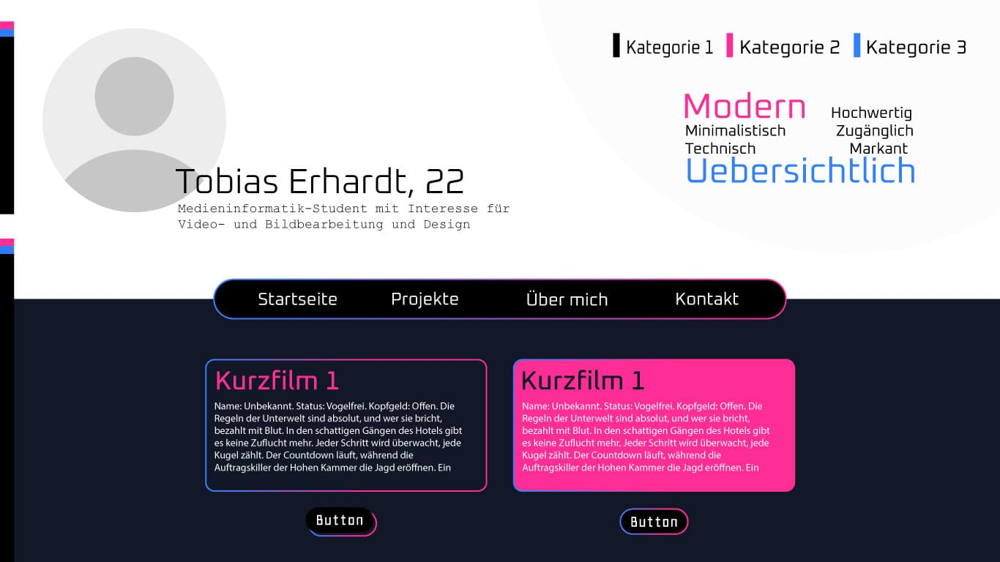
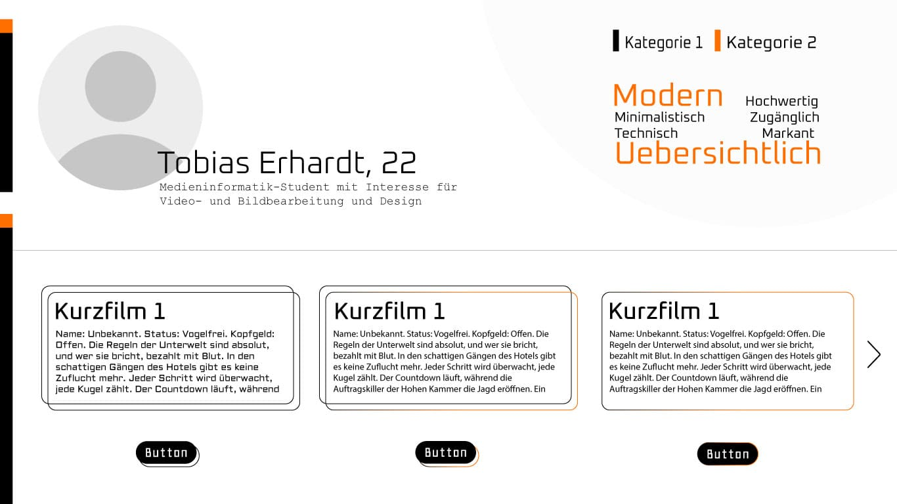
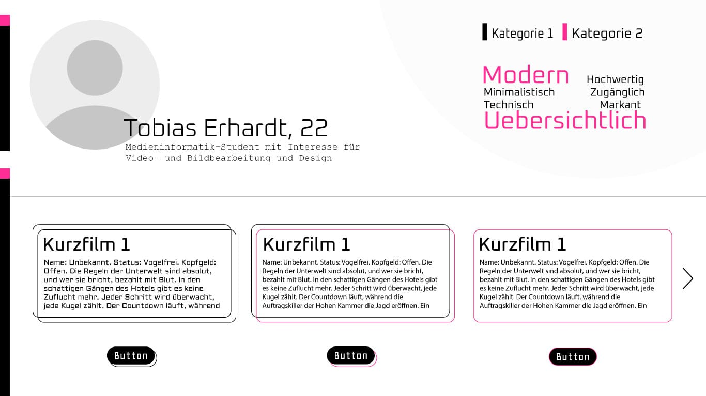
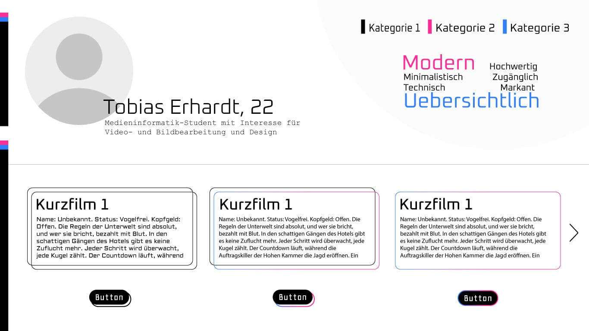
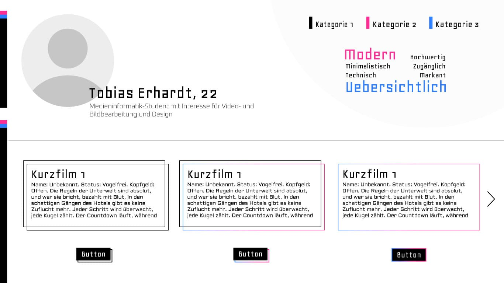
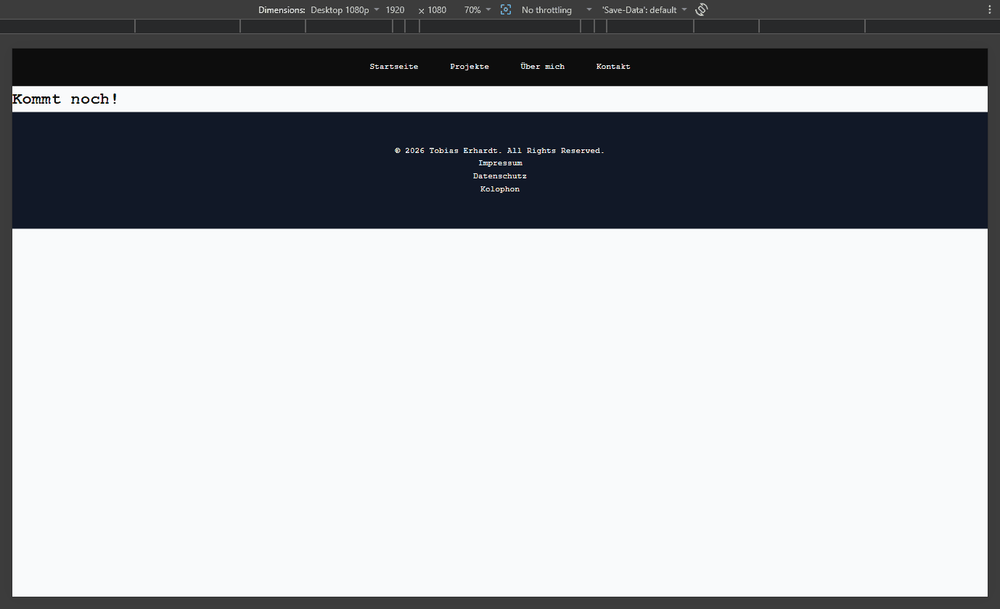
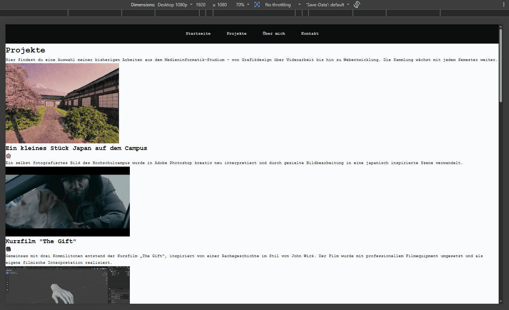
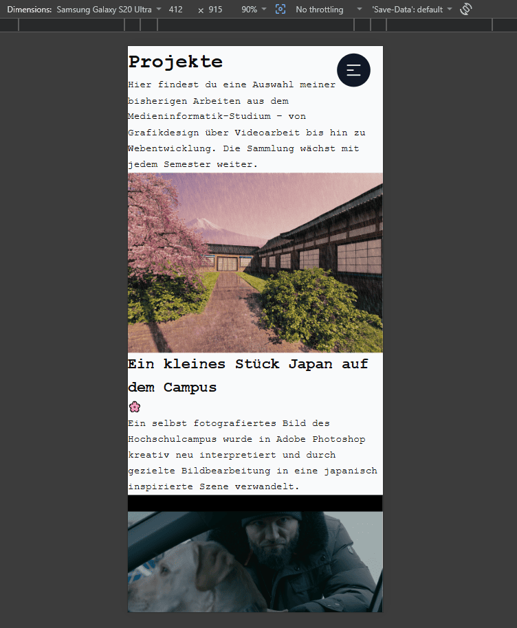
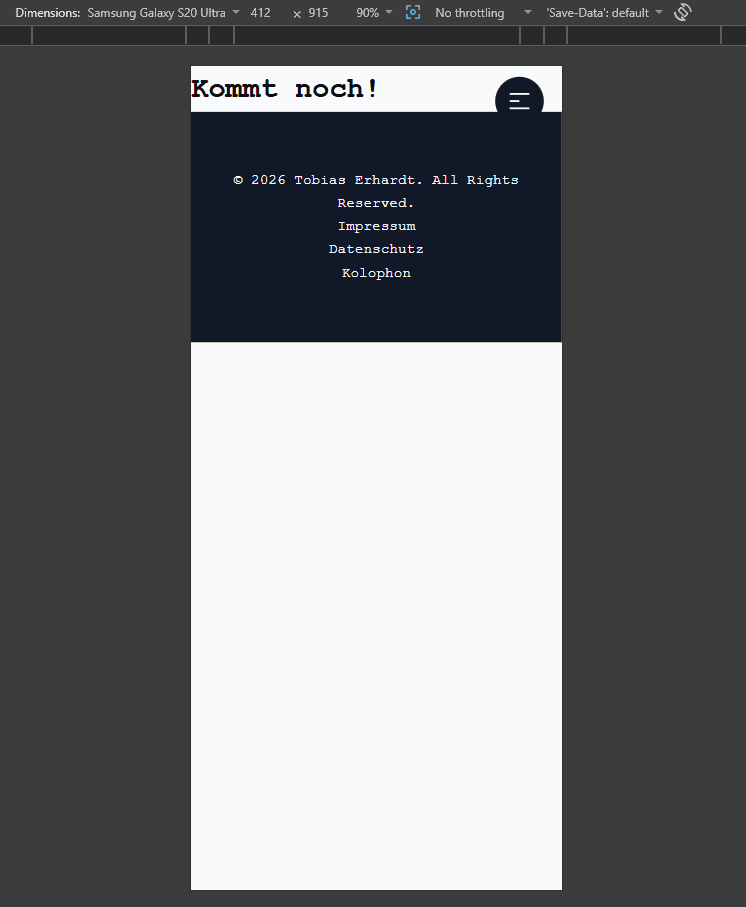

Dokumentation
Tobias Erhardt · toer7303 · Matrikelnummer: 770755
Über dieses Projekt
Diese Website soll dienen als persönliches Portfolio und digitale Dokumentation des bisherigen Studiumsverlaufs. Sie soll Projekte und Arbeiten, die im Laufe des Studiums entstanden sind, übersichtlich präsentieren und den eigenen Werdegang nachvollziehbar machen. Die Site ist als wachsendes Projekt angelegt und wird fortlaufend um neue Arbeiten und Projekte ergänzt. Neben Studiumsprojekten sollen zukünftig auch Arbeiten einfließen, die durch eigene Initiative und in der Freizeit entstehen. Sie soll langfristig als Grundlage für Bewerbungen und Kontaktaufnahmen dienen.
Die Site stellt abgeschlossene Studiumsprojekte vor, gibt einen persönlichen Überblick über Ausbildung und Fähigkeiten und ermöglicht Besucher:innen, Kontakt aufzunehmen. Zielgruppe sind potenzielle Arbeitgeber, Kommilitonen und Interessierte aus dem Medienbereich.
Gestalterische Idee
Ich fand die Farbkombination Blau und Pink schon immer eine der schönsten. Außerdem haben mich die Farben an IntelliJ erinnert, eine IDE, die ich ebenfalls zum Programmieren von Java benutze. Insgesamt soll das Design modern, clean, übersichtlich, hochwertig und minimalistisch wirken, aber trotzdem markant und einfach zugänglich sein. Vor allem soll es einfach modern und clean wirken, woraus automatisch Übersichtlichkeit resultiert. Das leicht Technische, vor allem durch Schriftarten wie Quantico, passt meiner Meinung nach perfekt zu diesem modernen Stil. Die Farbkombination aus Pink und Blau strahlt außerdem eine zukunftsmäßige Atmosphäre aus -> Und Zukunft und Technik passen bekanntlich gut zueinander. Letztendlich soll das Design also vor allem Zugänglichkeit, Hochwertigkeit und eine gewisse Zukunftsatmosphäre ausdrücken. Es soll sich einfach clean anfühlen.
Style Tiles
Style Tile 1

Style Tile 2
Style Tile 3

Style Tile 4

Style Tile 5

Style Tile 6

Style Tile 7

Ich habe mich für Style Tile 1 entschieden, da es das ausgereifteste war und mir vom Look her einfach am besten gefallen hat. Es bringt die Attribute, die ich vorher genannt habe, in meinen Augen am besten zusammen und schafft ein stimmiges Gesamtbild. Die überlappenden Doppellinien haben mir zwar ebenfalls sehr gut gefallen, allerdings weiß ich nicht, ob das Design dadurch noch so modern gewirkt hätte. Die Style Tiles 4 bis 7 hätten die Website auf jeden Fall noch technischer wirken lassen. Insgesamt war mir das aber zu viel Weißraum und einfach etwas zu technisch, vor allem in Kombination mit den ebenfalls sehr technischen Schriftarten. Die Style Tiles mit nur einer Farbe fand ich ebenfalls interessant und ansprechend, allerdings hatten auch diese für meinen Geschmack zu viel Weißraum. Ich habe mich einfach von Anfang an in die Kombination aus Blau und Pink verliebt. Deshalb musste es am Ende eines dieser Style Tiles werden.
Vom Entwurf zur Umsetzung
Verändert hat sich gegenüber dem Style Tile gar nicht mal allzu viel. Ich finde tatsächlich, dass das ausgewählte Style Tile die fertige Website schon ziemlich gut widerspiegelt. Das liegt auch daran, dass es bereits zwei sehr auffällige Elemente enthält, die fast genauso auf der Website umgesetzt wurden, nämlich die Projektkacheln. Selbst die Schriftarten sind im Vergleich zum Style Tile gleich geblieben. Gegenüber den anderen Style Tiles unterscheidet sich das Endergebnis allerdings deutlich stärker. Geändert hat sich zum Beispiel, dass mein Name nicht mehr zusammen mit meinem Alter steht. Das Alter habe ich letztendlich komplett weggelassen. Außerdem überlappt der Name nicht mehr mit dem Profilbild. In meiner Vorstellung sah das zunächst ziemlich cool aus, in der Praxis hat es mich dann aber doch weniger überzeugt. Deshalb habe ich den Namen letztendlich einfach unter das Profilbild gesetzt. Ansonsten sind viele Elemente gleich geblieben oder sogar direkt übernommen worden. Auch die Navigationsleiste hat es mit diesem Design in das Endprodukt geschafft.
Typografie, Farben, Layout
Für die Überschriften habe ich meistens eine Schriftgröße von 3rem verwendet. Wenn es sich angeboten hat, auch mal 3.5rem. Die 3rem kamen vor allem bei den Projektkacheln zum Einsatz. Viel größer durften die Überschriften dort nicht sein, da es sonst Probleme mit den Bildern innerhalb des Rahmens gegeben hätte. Bei Fließtext habe ich meistens Schriftgrößen zwischen 1rem und 1.2rem verwendet. So hat zum Beispiel der kleine Begrüßungstext auf der Startseite eine Schriftgröße von 1.2rem und ist als einer der wenigen Texte linksbündig. Die meisten anderen Texte sind zentriert. An dieser Stelle hat die linke Ausrichtung für mich einfach besser gepasst und wirkt dadurch auch etwas auffälliger.
Die Farbe Pink mit dem Hex Code #ff2d95 habe ich durchgehend für die größten Überschriften verwendet. Die H1 Überschriften sind also immer pink. Blau mit dem Hex Code #3180ff habe ich für die H2 Überschriften genutzt. Als Hintergrundfarben habe ich hauptsächlich das dunkle Blau #111827 und Off White mit dem Hex Code #f9fafb verwendet. Die beiden Farben harmonieren meiner Meinung nach sehr gut miteinander und sorgen für einen angenehmen Kontrast. Immer wenn auf einem dunkelblauen Hintergrund Text dargestellt wurde, habe ich dafür die Off White Farbe verwendet, damit alles gut lesbar bleibt.
Meine Breakpoints lagen bei 768px, 920px und 1200px. Die 768px und 920px waren hauptsächlich für Tablet Größen gedacht, während 1200px für Desktop Bildschirme genutzt wurde. Der Breakpoint bei 920px ist vor allem wegen der Projektkacheln entstanden. Die Bilder sollten weiterhin sauber mit ihrem Rahmen abschließen. Hätte ich nur den Breakpoint bei 768px verwendet, wären die Bilder deutlich kleiner gewesen als die Rahmen der jeweiligen Kacheln. Deshalb beginnt die erste größere Veränderung erst bei 920px. So bleiben die Bilder in ihrer richtigen Form und passen weiterhin perfekt in die Projektkacheln.
Ich habe mich außerdem für einen Mobile First Ansatz entschieden. Dadurch konnte ich die Website zuerst für kleine Displays optimieren und sie anschließend Schritt für Schritt für größere Bildschirmgrößen erweitern. Das hat den Entwicklungsprozess deutlich übersichtlicher gemacht und sorgt dafür, dass die Website auch auf Smartphones von Anfang an gut funktioniert.
Responsive Design
Auf mobilen Endgeräten stapeln sich die Projektkacheln untereinander und nehmen die volle Breite ein. Die Navigationsleiste verschwindet komplett und wird durch ein Burger-Menü ersetzt, das sich beim Klicken als Vollbild-Overlay von rechts einschiebt. Das Profilbild und der Name auf der Startseite sind ebenfalls untereinander angeordnet und zentriert. Ab 920px ändert sich das Layout deutlich. Die Navigationsleiste erscheint wieder als klassische horizontale Leiste oben. Die Projektkacheln auf der Startseite wechseln von der gestapelten Ansicht zu einem abwechselnden Links-Rechts-Layout, bei dem Bild und Text nebeneinander stehen. Ab 1200px werden die Kacheln noch etwas breiter und die Schriftgrößen wachsen leicht mit.
Technische Umsetzung
Die Website ist als statische Site aufgebaut, also komplett ohne Frameworks oder vorgefertigte Bibliotheken. Alle Seiten teilen sich eine gemeinsame style.css und eine script.js.
Die HTML-Struktur folgt einem semantischen Aufbau mit header, main, section, article und footer. Klassen habe ich so vergeben, dass sie den Inhalt beschreiben, also zum Beispiel hero-profil, auswahl-projekte oder projekt-kachel-innen.
Das CSS ist nach Mobile First aufgebaut. Ganz oben stehen die Basis-Styles, dann kommen die einzelnen Sektionen jeweils mit ihren eigenen Klassen, und ganz unten die Media Queries für 920px und 1200px. Für wiederkehrende Werte wie Farben und Schriften habe ich CSS Custom Properties verwendet, also Variablen wie --farbe-pink oder --font-display, die ich dann überall wiederverwenden konnte.
Für die mobile Navigation wurde ein klassisches Hamburger Menü implementiert, das einen wichtigen Teil der Bedienung auf kleinen Bildschirmen übernimmt. Gleichzeitig ist die gesamte Website laut Aufgabenstellung auch ohne JavaScript vollständig lesbar und funktionsfähig, sodass die Grundnavigation weiterhin auch ohne das Menü funktioniert. Das Skript dient im Sinne von Progressive Enhancement.
Das zugehörige JavaScript habe ich mithilfe verschiedener Tutorials und Dokumentationen erarbeitet und logisch aufgebaut. Es basiert auf einer einfachen, aber effektiven Event Listener Struktur.
Projekttagebuch - Screenshots
Impressum - Desktop

Kontakt - Desktop

Projekte - Desktop

Projekte - Mobile

Impressum - Mobile
